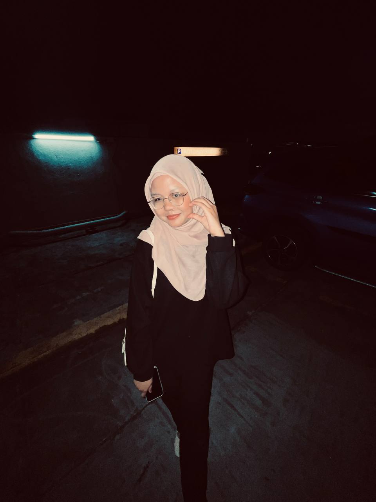
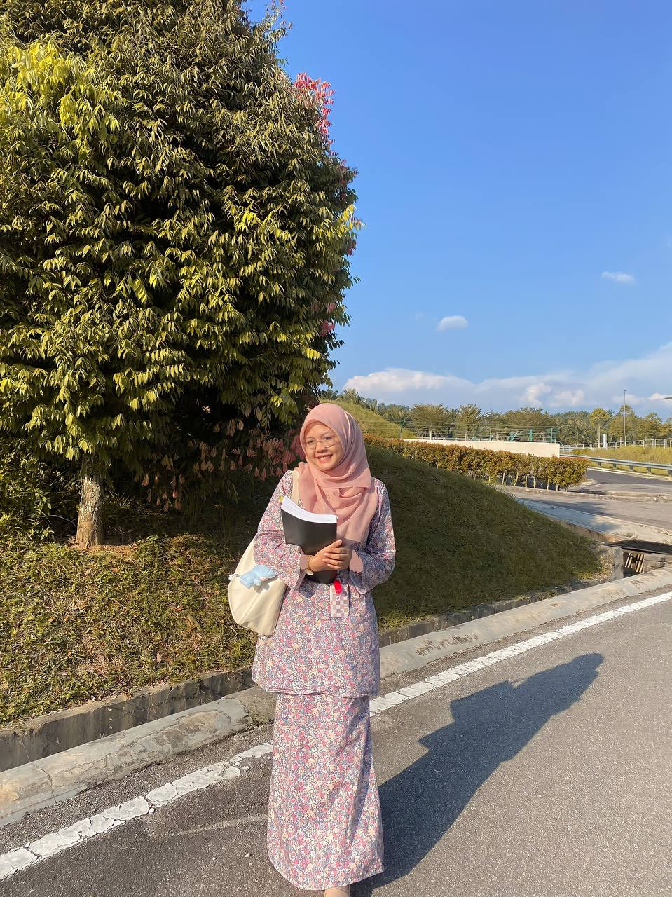
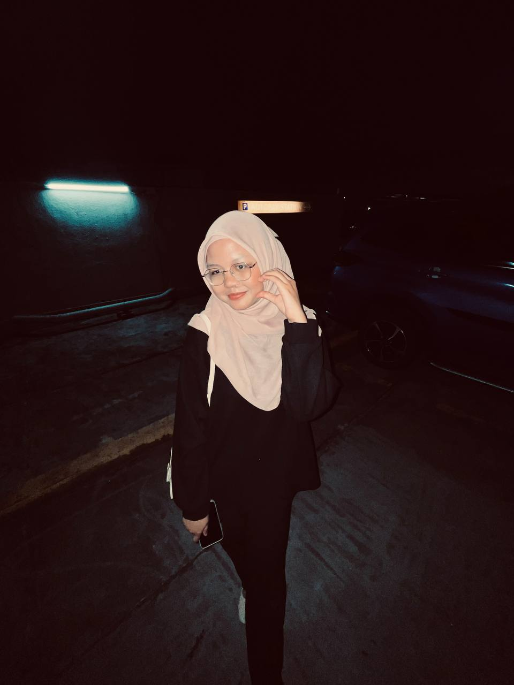
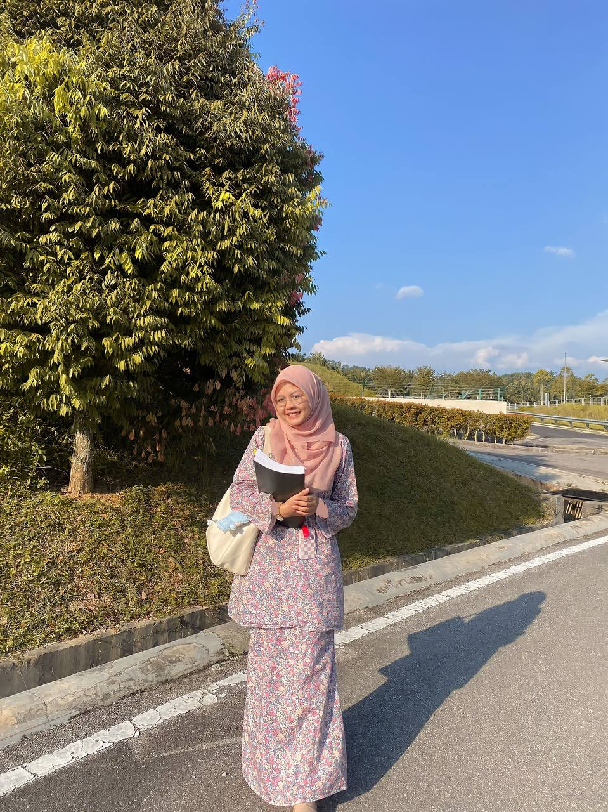

LET'S GET TO KNOW ME!
 



| Name | Anis Nabilah Binti Mohd Muliadi |
|---|---|
| Nickname | Anis |
| Nisnis | |
| Date of Birth | 28 May 2003 |
| Age | 20 Years Old |
| Student Number | 2021464558 |
| State | Bandar Tun Razak, Cheras |
| City | Kuala Lumpur |
| Fav Colors | Lilac |
| Rose gold | |
| Where I was born? | HUKM, Cheras |
| Hobbies | Playing badminton |
| Watching K-Dramas | |
| nabilaha264@gmail.com | |
| 2021464558@student.uitm.edu.my |
I am the eldest of 2 siblings. I was born and raised in Bandar Tun Razak, Cheras Kuala Lumpur.
Now, I am struggling to finish this diploma in course Information Management successfully.
I am a cat lover, I have 5 cats at home. I have a heavy heart because I will cry when I see a cat or dog in pain.
Also, I'm an interesting, fun-loving person with a good sense of humor.
One thing about me that is important to know is that, at first I came across as a very shy girl but once I got to know people and was comfortable in my surroundings, I was amazing. It's hard for me to make friends but when I do, it's great and I'm different. I joke, laugh and humor people and I also get as much as I give. I am a very kind, compassionate, sensitive girl as my close friends will tell you.
These are the lists of my favourite songs that I always listened to, most of them are Sendu and Kpop songs but the most favourite is Still with you by Jungkook BTS (you can click the audio provided below)
One thing about me that is important to know is that, at first I came across as a very shy girl but once I got to know people and was comfortable in my surroundings, I was amazing. It's hard for me to make friends but when I do, it's great and I'm different. I joke, laugh and humor people and I also get as much as I give. I am a very kind, compassionate, sensitive girl as my close friends will tell you.
These are the lists of my favourite songs that I always listened to, most of them are Sendu and Kpop songs but the most favourite is Still with you by Jungkook BTS (you can click the audio provided below)
- Drama by Aespa
- Perfect night by Leeserafirm
- Typa girl by Blackpink
- Hug by Seventeen
- Tak segampang itu by Anggi Marito
- Hilang tanpa bilang by Meiska
- Langit yang sama by Dalia Farhana